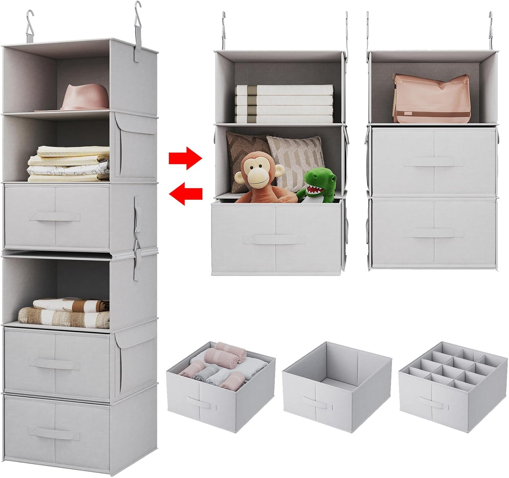

Living in a studio or a small apartment doesn’t mean you have to live with clutter. With a few clever hacks, you can turn even the tightest corners into functional storage. These ideas are budget-friendly, renter-safe, and perfect for anyone trying to make a small space feel like home.
1. Under‑Bed Storage Drawers
That dusty space under your bed can actually be a decluttering powerhouse. Invest in flat bins or shallow drawers on wheels to neatly store seasonal clothes, extra linens, or even holiday decorations. You’ll free up closet space and keep things out of sight but still within easy reach.
 → Buy on Amazon
→ Buy on Amazon
2. Hanging Closet Shelves
These fabric shelves hang from your closet rod and give you 3–6 compartments to stack clothes, accessories, or shoes—without needing a dresser.
 → Buy on Amazon3. Floating Shelves
Wall-mounted floating shelves are a minimalist’s dream. Use them above desks, counters, or even in tight hallways to display items or store essentials without cluttering floor space. They’re also perfect for adding a decorative flair while keeping things functional.
 → Buy on Amazon
→ Buy on Amazon
4. Foldable Wall Hooks or Racks
Mount foldable hooks behind your door or along walls to hang coats, bags, or hats. Fold them in when not in use—perfect for tight entryways or multipurpose rooms.
 → Buy on Amazon
→ Buy on Amazon
5. Multipurpose Baskets
Baskets aren’t just for laundry. Use woven, metal, or fabric baskets on shelves, in closets, or under furniture to group related items like towels, pantry goods, or books. They add texture to your space while keeping clutter contained and easy to manage.
→ Buy on Amazon6. Slim Rolling Carts
If you’ve got an awkward gap between appliances or in a corner—slide a narrow rolling cart in there. Great for cleaning supplies, beauty products, snacks, or spices. The best part? You can move them around wherever and whenever you need.
 → Buy on Amazon
→ Buy on Amazon
7. Bedside Caddy Organizer
Great for holding your phone, book, glasses, or remote — all without a bulky nightstand. Ideal for loft beds, futons, or tight spaces where tables don’t fit.
 → Buy on Amazon
→ Buy on Amazon
Final Thought
Small spaces can feel big when you use the right tricks. Try one or two of these storage hacks this week and notice the difference—your space will thank you.